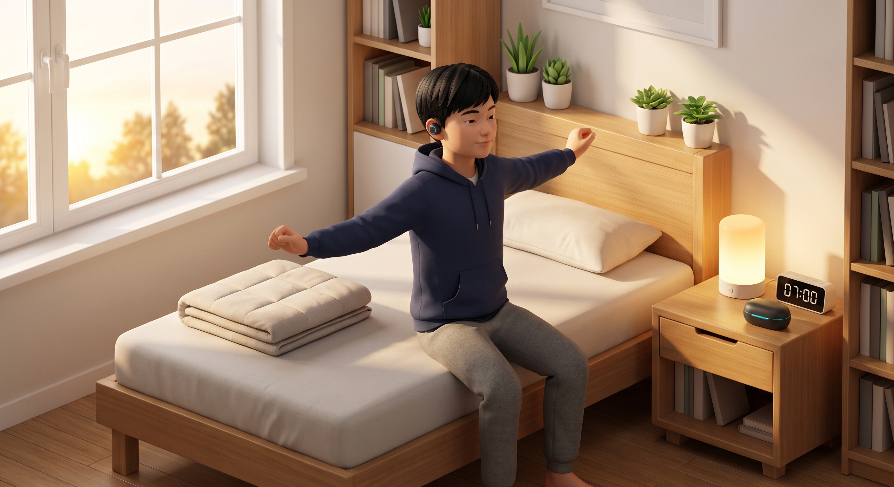
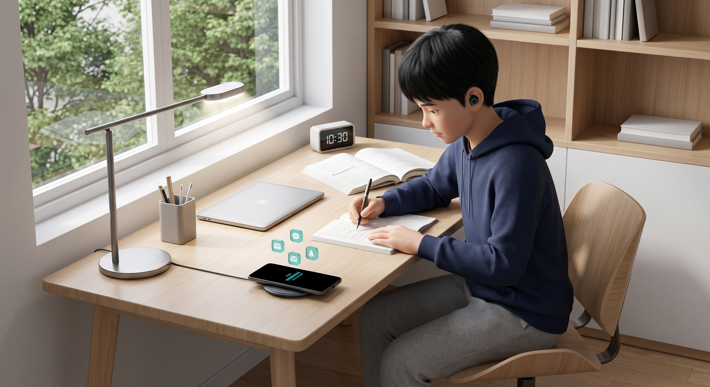
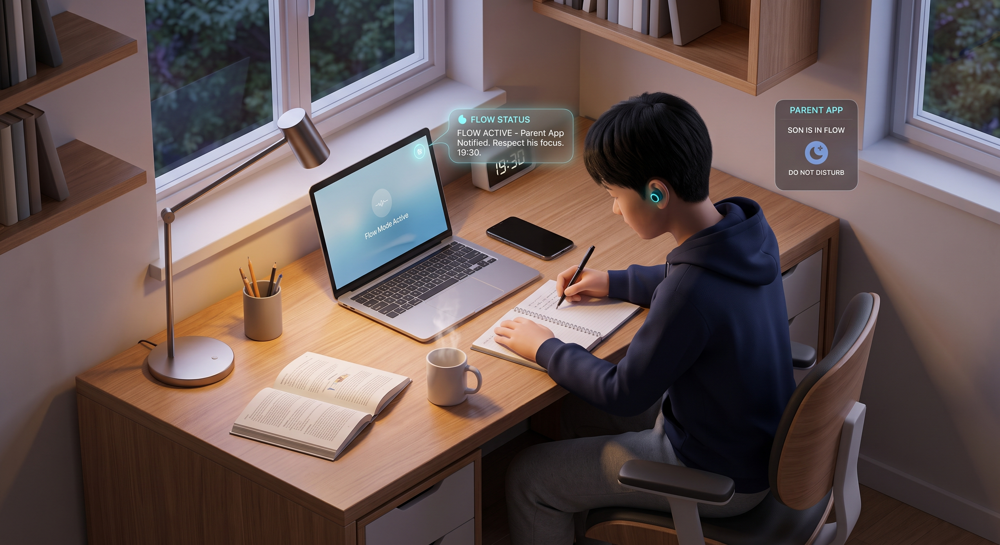

🏠
Real-World Living Lab Challenge : Direction One (Youth Health)
Bring healthcare into life, not life into healthcare
Reframing adolescent sleep deprivation and digital distraction into positive everyday home routines. Powered by flexible in-ear bio-sensing, growth-mindset AI motivation, and ambient smart home IoT with zero active daily burden.
👇 Scroll down to explore Prototypes, Interventions, Exclusivity & APA Bibliography

⏱️ 24H Living Lab Flow
⏱️
24-Hour Home Living Lab Demonstration
5 key daily life scenarios (07:00 Wake-Up, 10:30 Study Focus & αCLAS, 16:30 Workout, 19:30 Study Shield, 22:15 Deep Sleep CLAS). Demonstrates modular on-demand usage (non-invasive, zero all-day wear burden) with seamless 1-click toggle between Real-Life Story and Neuroscience Citations.
🚀 Open 24H Showcase
➔

📱 Adolescent Console
📱
Adolescent Mobile App Prototype
Interactive two-column mobile console featuring real-time CLI focus tracking, αCLAS 10Hz Alpha brainwave modulation, 3-second breathing micro-intervention, 180 spm cadence running, and 100% screen-off bedtime voice messaging.
📱 Open Teen App
➔

🛡️ Parent Console
🛡️
Parent Guard & Co-Growth Console
Eliminates intrusive surveillance and forced lockouts. Provides study flow protection, custom break care reminders (dinner/fruit), smart home IoT manager, parenting coach scripts, and World Health Organization (WHO) co-growth habit contracts.
🛡️ Open Parent Console
➔
In-ear in-ear micro-speaker and micro-pickups allow teenagers to hear and whisper messages with friends while keeping the phone screen completely pitch black—eliminating midnight doomscrolling from the biological source.
🌐
SOFTWARE & SERVICE ECOSYSTEM
💻
Cue Multi-End Application Architecture
Seamless synergy between the Teen Mobile App and the Parent Co-Growth Console—bridging adolescent self-determination and caring parental support without surveillance.
📱
Cue Adolescent App (5 Core Modules)
Open Prototype ➔
📅 Daily Momentum: CAR sunrise wake tracking, WHO-aligned daily micro-habits, and positive daily progress logging.
📚 Focus & αCLAS Modulation: Real-time CLI tracking, αCLAS 10Hz Alpha modulation, and 3-second breathing friction against doomscrolling.
🎙️ Growth Mindset Voice AI Coach: In-ear private voiceprint interaction providing effort-based encouragement without empty flattery or nagging.
🏃 Cadence-Matched Sport: Cadence-matched music, in-ear PPG aerobic HR (135 bpm), and peer kudos with zero leaderboard anxiety.
🌙 Screen-Off Bedtime & CLAS: 100% black screen voice messaging, sunset warm light, and CLAS slow-wave deep sleep enhancement.
🛡️
Parent Co-Growth Console (4 Core Modules)
Open Console ➔
📊 Co-Growth Dashboard: Aggregated macro status sharing (wake time, steps, deep sleep hours) without intrusive surveillance.
🛡️ Study Flow Shield: Real-time 'SON IN FLOW' status display preventing door-knocking interruption and 15–20 min attention residue costs.
🏠 Smart Home IoT Manager: Automated ambient study lamp, living room audio muting, and bedroom temperature sync.
💬 Positive Parenting Scripts: AI communication guidance coaching parents on positive affirmation, plus WHO co-growth contracts.
🧠
HOW IT WORKS : SCIENTIFIC PRINCIPLES
🔬
How Cue Works: Gentle Biological & Habit Principles
Explaining the gentle physiological principles and daily habit nudges behind Cue—in clear, everyday analogies for parents and modest, validated scientific foundations for researchers.
CLAS (Closed-Loop Auditory Stimulation) : Deep Sleep & Restorative Recovery
In-Ear EEG 250Hz Phase-Locking · Sensation-Threshold Pink Noise
Experience & Working Principle: In-Ear EEG electrodes monitor deep sleep slow oscillations (SO ~0.5–1.25 Hz) at 250Hz. Much like pushing a swing at the exact peak of its arc, when slow waves reach their peak, the earbud delivers an individual sensation-threshold-adapted acoustic pulse to constructively amplify deep restorative sleep without waking the teen.
Scientific & Physiological Evidence: Phase-locked micro-pulses during the Up-Phase constructively amplify slow-wave amplitude via closed-loop acoustic resonance (Coon et al., Front Neurosci 2025), driving cerebrospinal fluid pulsation to facilitate glymphatic metabolic clearance during N3 sleep (Møllgård et al., Science 2023; Xie et al., Science 2013).
αCLAS (Alpha Closed-Loop Auditory Stimulation) : 10Hz Alpha Focus Audio & Phase Modulation
Closed-Loop Phase-Resetting · Prefrontal 10Hz Alpha Focus
Experience & Working Principle: In-Ear EEG monitors real-time cognitive load (Theta/Beta CLI). When attention drifts during homework, the earbud plays soothing 10Hz alpha-modulated auditory stimulation embedded with phase-resetting acoustic pulses—acting like a quiet background metronome to guide wandering thoughts back into steady focus.
Scientific & Physiological Evidence: Closed-loop auditory stimulation applies phase-reset mechanisms to selectively modulate parieto-occipital potentials into synchronized 10Hz Alpha oscillations (Hebron et al., PLOS Biol 2024). Alpha rhythms functionally inhibit distracting sensory noise and stabilize top-down executive attention.
Gentle Sunrise Wake-Up, Eliminating Morning Grumpiness
Simulated Morning Dawn · Natural Circadian Awakening
Experience & Working Principle: Replaces abrupt, jarring alarm ringtones that cause panic heart rate and morning irritability. 20 minutes before wake-up, bedroom lighting gradually brightens like a natural dawn (5000K daylight spectrum) while the room gently warms, allowing the body to awaken naturally and refreshed.
Scientific & Physiological Evidence: Morning light (5000K daylight spectrum calibrated to the Melanopic EDI consensus standard established by Brown et al., PLOS Biol 2022) penetrating closed eyelids activates intrinsically photosensitive retinal ganglion cells (ipRGCs), signaling the suprachiasmatic nucleus to suppress melatonin and trigger the natural Cortisol Awakening Response (CAR), eliminating morning grogginess.
3-Second Breathing Pause to Reduce Mindless Phone Checking
Gentle Self-Nudge · Breaking the Unconscious Reflex
Experience & Working Principle: Reaching for short video apps during study is often an unconscious habit reflex. When tapping an entertainment app, a gentle 3-second breathing animation appears. This subtle friction never forcefully locks the device, but provides a crucial pause for rational reflection, curbing mindless scrolling before it begins.
Scientific & Physiological Evidence: In-Ear EEG monitors real-time cognitive load (CLI = Theta/Beta ratio). Applying the self-nudge micro-friction principle from Grüning et al. (PNAS 2023) (which proved 36% immediate abandonment and 37% open reduction), Cue injects a 3-second breathing pause to delay instant gratification and allow rational prefrontal control to re-engage.
Cadence Rhythm & Motion-Resilient In-Ear Heart Rate
In-Ear Optical Sensing · Healthy Dopamine & Encouraging Feedback
Experience & Working Principle: Wrists swing vigorously during jogging, creating motion noise on smartwatches. In-ear optical PPG, augmented by digital motion-filtering, provides continuous workout heart rate tracking in the ear canal (Passler et al., Sensors 2019). 180 spm cadence music serves as Cue's target step rate based on elite running heuristics (building on the joint unloading mechanics from Heiderscheit et al., MSSE 2011), while immediate AI validation upon stopping delivers healthy, lasting satisfaction far beyond social feeds.
Scientific & Physiological Evidence: In-ear reflective PPG sensors provide continuous heart rate tracking during workouts (Passler et al., Sensors 2019). Sustaining a 135 bpm aerobic target stimulates natural endorphin and dopamine release, while effort-based praise (Yeager et al., Nature 2022) fosters intrinsic self-regulation.
🔒
DATA PRIVACY & ETHICAL COMPLIANCE
🛡️
Strict Minor Data Protection & Zero Surveillance Standard
Adolescent neural biometrics are classified as highly sensitive personal data. Cue strictly complies with personal information protection regulations (PIPL), rigorously safeguarding privacy and autonomy.
🔐
Zero Raw EEG Upload
Microvolt neural signals are filtered and computed on local earbud DSP chips. Raw waveforms are wiped immediately, with zero cloud storage or advertising monetization.
👁️🗨️
Zero Chat Snooping or Mirroring
Parent devices only receive aggregated macro status indicators (e.g. 'In Deep Study', 'Run Completed'). Teen private chats, voice audio, and app browsing are never accessible to parents.
🤝
Non-Coercive Co-Growth Compact
No remote lockouts or camera surveillance. Builds on WHO AA-HA! (2023) adolescent health guidance and mutual agreement contracts to foster intrinsic motivation and parental peace of mind.
📚
PEER-REVIEWED SCIENTIFIC EVIDENCE (2022–2026)
🔬
Academic Bibliography & Empirical Evidence Base (2022–2026 APA 7th)
Every physiological intervention modality, acoustic frequency, and behavioral mechanism in Cue is directly validated by recent peer-reviewed literature (2022–2026) in neuroscience, chronobiology, and psychology.
📄
Part I: Academic Papers (5+ Peer-Reviewed Journals)
• Coon, W. G., Nilsson, S. J., Smith, M. T., & Reid, M. J. (2025). Acoustic stimulation and other emerging approaches to enhance sleep: Design notes for the next generation of closed-loop neurostimulation technology. Frontiers in Neuroscience, 19, 1682450. https://doi.org/10.3389/fnins.2025.1682450 CLAS Phase-Locked Slow Oscillations
• Møllgård, K., Beinlich, F. R. M., Kusk, P., Miyakoshi, L. M., Delle, C., Plá, V., Hauglund, N. L., Esmail, T., Rasmussen, M. K., Gomolka, R. S., Mori, Y., & Nedergaard, M. (2023). A mesothelium divides the subarachnoid space into functional compartments. Science, 379(6627), 84–88. https://doi.org/10.1126/science.adc8810 SLYM & Glymphatic Barrier Foundation
• Grüning, D. J., Riedel, F., & Lorenz-Spreen, P. (2023). Directing smartphone use through the self-nudge app one sec. Proceedings of the National Academy of Sciences, 120(8), e2213114120. https://doi.org/10.1073/pnas.2213114120 Digital Micro-Nudge: -37% Usage
• Brown, T. M., Brainard, G. C., Cajochen, C., Czeisler, C. A., Hanifin, J. P., Lockley, S. W., Lucas, R. J., Münch, M., O'Hagan, J. B., Peirson, S. N., Price, L. L. A., Roenneberg, T., Schlangen, L. J. M., Skene, D. J., Spitschan, M., Vetter, C., Zee, P. C., & Wright, K. P., Jr. (2022). Recommendations for daytime, evening, and nighttime indoor light exposure to best support physiology, sleep, and wakefulness in healthy adults. PLOS Biology, 20(3), e3001571. https://doi.org/10.1371/journal.pbio.3001571 ipRGCs & Circadian Entrainment
• Leroy, S. (2009). Why is it so hard to do my work? The challenge of attention residue when switching between work tasks. Organizational Behavior and Human Decision Processes, 109(2), 168–181. https://doi.org/10.1016/j.obhdp.2009.04.002 Attention Residue Theory
• Fitzpatrick, K. K., Darcy, A., & Vierhile, M. (2017). Delivering cognitive behavior therapy to young adults with symptoms of depression via a fully automated conversational agent (Woebot): A randomized clinical trial. JMIR Mental Health, 4(2), e19. https://doi.org/10.2196/mental.7785 AI Conversational Agent for Youth
• Passler, S., Müller, N., & Senner, V. (2019). In-ear pulse rate measurement: A valid alternative to heart rate derived from electrocardiography? Sensors, 19(17), 3641. https://doi.org/10.3390/s19173641 In-Ear PPG Heart Rate Validation
• Hebron, H., et al. (2024). A closed-loop auditory stimulation approach selectively modulates alpha oscillations and sleep onset dynamics in humans. PLOS Biology, 22(6), e3002651. https://doi.org/10.1371/journal.pbio.3002651 αCLAS Alpha Phase Modulation
📊
Part II: Recent Empirical Studies (Past 5 Years / 2022–2026)
• Yeager, D. S., Bryan, C. J., Gross, J. J., Murray, J. S., Krettek Cobb, D., Santos, P. H. F., Gravelding, H., Johnson, M., & Jamieson, J. P. (2022). A synergistic mindsets intervention protects adolescents from stress. Nature, 607(7919), 512–520. https://doi.org/10.1038/s41586-022-04907-7 Growth Mindset Effort Feedback
• Tabar, Y. R., Mikkelsen, K. B., Shenton, N., Kappel, S. L., Hemmsen, M. C., Rank, M. L., Otto, M., & Kidmose, P. (2023). At-home sleep monitoring using generic ear-EEG. Frontiers in Neuroscience, 17, 987578. https://doi.org/10.3389/fnins.2023.987578 In-Ear Sleep EEG Feasibility
• Lee, T., Cho, Y., Cha, K. S., Jung, J., Cho, J., Kim, H., Kim, D., Hong, J., Lee, D., Keum, M., Kushida, C. A., Yoon, I.-Y., & Kim, J.-W. (2023). Accuracy of 11 wearable, nearable, and airable consumer sleep trackers: Prospective multicenter validation study. JMIR mHealth and uHealth, 11, e50983. https://doi.org/10.2196/50983 Wrist Wearable vs In-Ear Accuracy
• Ho, M., Schulz, P. J., & Chang, A. (2025). Exploring the impact of perceived parental oversight on problematic smartphone use among adolescents in the digital age. JMIR Pediatrics and Parenting, 8, e75837. https://doi.org/10.2196/75837 Parental Control vs Reactance
🏛️
Part III: Authoritative International Guidelines & Standards (WHO / NICE)
• World Health Organization (WHO). (2023). Global accelerated action for the health of adolescents (AA-HA!): Guidance to support country implementation (2nd ed., ISBN: 9789240081765; Inheriting WHO 2015 Global Standards). Geneva: World Health Organization. https://www.who.int/publications/i/item/9789240081765 WHO Adolescent Autonomy & Ethics
• National Institute for Health and Care Excellence (NICE). (2022). Sleepio to treat insomnia and insomnia symptoms (Medical Technologies Guidance MTG70). London: NICE. https://www.nice.org.uk/guidance/mtg70 Non-Pharmacological Guidance
🌐
Part IV: 2 International Living Lab Benchmark Cases
• Philips HomeLab (Eindhoven, Netherlands): De Ruyter, B., Aarts, E., Markopoulos, P., & IJsselsteijn, W. A. (2005). Ambient Intelligence Research in HomeLab: Engineering the User Experience. In Ambient Intelligence (pp. 49–61). Springer, Berlin, Heidelberg. https://doi.org/10.1007/3-540-27139-2_4 Ambient Intelligence Living Lab
• Digital Wellness Lab, Boston Children's Hospital & Harvard Medical School (USA): Carter, M. C., et al. (2025) [Dir: M. Rich]. Placing problematic media use in context: a research synthesis, person-centric framework, and chart review among a clinical sample of US youth. Frontiers in Psychiatry, 16, 1574502. https://doi.org/10.3389/fpsyt.2025.1574502 | Official Lab Portal Adolescent Digital Health Lab